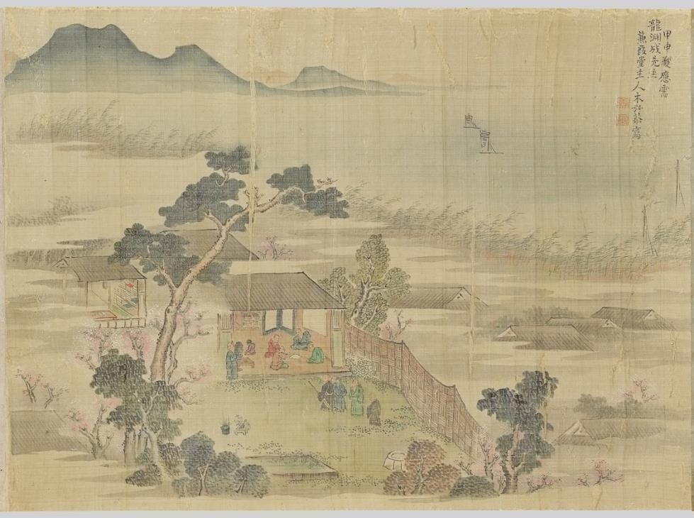

Sŏŏl Interactions with the Japanese Bunjin in 1763 T’ongsinsahaeng
Edited excerpt from the 2024 Harvard M.A. thesis
Edited excerpt from the 2024 Harvard M.A. thesis, “The In-Between Place of Sŏŏl (庶孼) in the Society and Diplomacy of Chosŏn Korea.” The passage examines how sŏŏl, secondary-status literati in Chosŏn Korea, used the 1763 diplomatic mission to Tokugawa Japan to build cultural authority, exchange knowledge with Japanese bunjin (literati), and negotiate their position at home. Its central question is how the members of a diplomatic mission who mediated contact with a foreign counterpart also shaped what their home audience came to know about it. Because the surviving records rarely state these actors’ motivations directly and were written within strong ideological and institutional constraints, the analysis reads motive from patterns in their language, self-presentation, and textual production. Romanization follows the McCune–Reischauer convention, and the original thesis footnotes are preserved and renumbered.
In 1763, Korean envoys were dispatched by King Yŏngjo (r. 1724–1776) to Japan, tasked with delivering the king’s letter of congratulations to the newly inaugurated shogun Tokugawa Ieharu (r. 1760–1786). Setting off from Tongnae, Korea, in October 1763, the mission made its customary journey through the Japanese archipelago toward the capital of Edo by land and by sea. With the successful delivery of the king’s letter to the shogun in March 1764, the Korean mission began its journey back to Korea, returning in June 1764. The 1763 T’ongsinsahaeng, also referred to as the Kyemi T’ongsinsahaeng (diplomatic mission to Japan of the Kyemi Year, 1763), comprised nearly five hundred members and was one of the largest and grandest t’ongsinsahaeng dispatched to Japan. Unfortunately, it would also prove to be the last to visit Edo, as the Tokugawa Shogunate who funded the missions was later plagued by fiscal problems following major famines in the late 1700s.1
The prominent sŏŏl members of the 1763 mission to Japan were four individuals, Kim Ingyŏm (金仁謙; 1707–1772) as the mission’s chesulgwan (an officer tasked with written correspondence with Japanese counterparts) and Sŏng Taejung (成大中; 1732–1809), Wŏn Chunggŏ (元重擧; 1719–1790), and Nam Ok (南玉; 1722–1770), each of whom was a scribe to one of the three heads of the diplomatic mission. Each of these sŏŏl members was well acquainted with the others, belonging to the same group of sŏŏl intellectuals living in the capital at this time. With the loosening of social controls upon the sŏŏl, their participation in poetry societies such as the Naksongnu Poetry Society (洛誦樓詩社), alongside yangban (兩班, the hereditary status group that dominated Chosŏn society on the strength of its literati identity), built social capital and brought the sŏŏl prestige and recognition. Even so, all of the sŏŏl were acutely aware of the social disadvantages they faced, with limited employment opportunities at high levels of government, even for these four sŏŏl scholar-officials who were widely known to be among the best writers of their generation.
The mission to Japan was significant to the sŏŏl in terms of prestige. Many of the sŏŏl who embarked upon the t’ongsinsahaeng often harbored clear ambitions of impressing their Korean audiences with their discoveries on Japan. Sŏŏl members of the mission accomplished this by establishing themselves between the two countries, effectively serving as a gateway connecting Chosŏn Korean literati to Tokugawa Japanese literati. All of these sŏŏl compiled comprehensive texts detailing their experiences, which gained acclaim within their network of like-minded sŏŏl and yangban literati back at home, as will be discussed later in this section. At the same time, the sŏŏl were also able to enter Japanese literati networks without fear of the social repression they often faced in Korea. While discussing a variety of topics ranging from Korean sociopolitical institutions to the orthodoxy of Neo-Confucianism, many of the sŏŏl were able to establish meaningful relationships with their Japanese counterparts.
These meaningful relationships with Japanese bunjin are most clearly illustrated by the interactions of the sŏŏl with members of the Kenkadō-kai (Kenka Hall Society) in Osaka, a group of self-professed Japanese literati, or bunjin, corresponding to the Korean munin, who studied poetry. Their exchange is especially striking because it developed amid a diplomatic crisis between the Korean mission and shogunal authorities. Unlike the first, largely uneventful stop at Osaka in January 1764, this second visit to the city in April was marred by the killing of a Korean officer, Ch’oe Ch’ŏnjong, in his quarters on the morning of April 7, with a Japanese man seen fleeing the scene. In the face of this unprecedented death during a Korean mission, its head, Cho Ŏm, demanded retribution.2
The relationship between the sŏŏl and members of the Kenkadō-kai developed despite this official hostility and the envoys’ physical separation from Japanese scholars. Over the course of a month in Osaka, Sŏng Taejung and other sŏŏl members were largely unable to meet Japanese literati personally due to the lockdown of the Korean mission. Yet the traffic of Japanese monks into and out of the compound allowed them to write letters to their Japanese counterparts through a shared fluency in literary Sinitic. Daiten Kenjō, a monk from Kyoto, played a particularly important role, as he regularly visited the sŏŏl’s compounds to deliver messages while also asking questions about Neo-Confucianism and Korea himself. It is also in this context that Sŏng requested and received a scroll depicting the Kenkadō-kai gathered before an open scroll.3 The Japanese literati of the Kenkadō-kai, referring to themselves as an “elegant gathering,” titled the image Kenka Gashūzū, 蒹葭雅集圖, or Elegant Gathering at Kenka Hall (Figure 1.3).
The scroll was painted by Kimura Kenkadō, host of the Kenkadō-kai and a well-known book collector, and it carries colophons of poems by members of the society. Sŏng added his own in 1768, after his return to Korea, and it appears to be in direct conversation with one of the poems on the scroll, by Katsu Shikin 葛子琴 (1739–1784). Both poems share a seven-character meter, the same ending rhyme of ang, and the same number of verses.4 Sŏng’s verses also answer particular motifs in Katsu’s: verse 2 meets Katsu’s flower garden with fragrance, verse 4 his shelves of books (likely an allusion to Kimura’s collection), and verse 5 his water birds. The two poems part ways over the season. Katsu’s closing verses dwell on the waters around Naniwa (Osaka) in spring, while Sŏng’s frost and dew in verse 6 and his jade-blue and light-yellow silk in verse 7 suggest a landscape changing color as autumn reaches the mountains and seas of Korea. The scroll thus records a dialogue between Sŏng and the Japanese literati that began during the mission and continued after it, conducted within the Sinographic Cosmopolis, the transregional literary world connected by written Sinitic.
| Katsu Shikin’s Colophon | Sŏng Taejung’s Colophon | |
|---|---|---|
| 1 | 千秋會友有文章, Over the course of many years, numerous friends with literary talents have gathered [here], |
藤牋倒射白毫光, The letter paper made of rattan reflects the light of Buddha; |
| 2 | 花圃藥欄舊草堂. Along with the flower garden and peony fences is a cottage. |
萬里携歸別有香. Brought back from afar, it possesses a certain special fragrance. |
| 3 | 罏酒應同司馬賣, The wine shop with alcohol must be the same as the one sold by Sima [Xiangru], |
淸月秋懸藏畵舫, The moon in a clear autumn sky hangs above a boat loaded with paintings; |
| 4 | 架書不讓鄴侯藏. The books on the shelf are not second to Ye Hou’s collection. |
暖花春滿蓄書房. Flowers on a warm spring day fill a room stacked with books. |
| 5 | 微雲淡路鷗千點, Thin wisps of clouds [hang above] Awaji; seagulls form thousands of dots; |
鴻魚信息經三歲, It took a long while for the message [to get to me] by geese and fish; |
| 6 | 疏雨浪華雁數行.5 Scattered rain falls in Naniwa; wild geese repeatedly fly over. |
霜露江湖渺一方. The rivers and lakes with frost and dew are on the distant side. |
| 7 | 湖海溯遊人幾在, From all around, those who go upstream and wander, how many of them are there? |
半幅縹緗隨處在, Half-strips of silk in jade-blue and light-yellow are everywhere; |
| 8 | 蒹葭隔浦欹帆檣. Among the reeds at a distant riverbank are slanting masts. |
海山今擬製琴囊. The mountains and the ocean have now become like a zither sack. |
| 9 | 集宴 Among those gathered in the cottage: |
槎歸之二季雅集中人改書相問. Two years after [I] rafted back from overseas, participants of the elegant gathering wrote to greet me. |
| 10 | 蠹葊葛張 世肅木長兄 Toan Katsu writes to “elder brother” Mr. Kimura Seishuku. |
戊子中秋淸城山人書于東湖官居. In the eighth month of the year Wuzi (1768), Ch’ŏngsŏng recluse composed [this passage] at [his] official residence by the Eastern Lake. |
Interestingly, Sŏng also called the Kenkadō-kai an “elegant gathering,” or ajip. This is notable because “elegant gatherings” form an important part of Confucian tradition, in which individuals of different status groups and even genders could gather to appreciate literature and nature together. Literary cultivation could thus create fellowship across differences of status and nationality. Sŏng’s poem reflects fewer of these elegant-gathering themes, but Katsu’s reference to the gathering of friends amid a garden in verses 1 and 2 seems to be a direct reference to Wang Xizhi’s preface written about the Lanting, or Orchid Pavilion (353 CE), in which Wang’s friends gathered to enjoy literati pursuits amid the pleasures of nature and alcohol. Much of this is also reflected in the image painted on the scroll by Kimura. The Elegant Gathering at Kenka Hall portrays a scene where members of the Kenkadō-kai are gathered in a residence-like hall. Blossoming trees in the foreground and long bamboo fences together seemingly shield the members from the outside gaze, while in the background, strokes of light ink wash create the effect of a dense mist protectively enveloping these literati from the outside world. Partially hidden behind a screen are stacks of books neatly organized on bookshelves, with more books on display in the room to the left of the main hall. The extensive collection of books symbolizes both Kimura’s accomplishments as a collector and the intellectual cultivation and erudition available within the safety of Kenka Hall.
In the center of the painting, a group of literati sits together inside the main hall. Before them is an open scroll in what seems to be a self-reference to their composition of the Elegant Gathering at Kenka Hall. Seated haphazardly and looking in various directions, members of the Kenkadō-kai are shown to be in discourse with one another. The suppression of visible rank, through the loose seating, similar clothing, and absence of distinctive facial features or hairstyles, made the gathering available for Sŏng to imagine as a community of cultural peers. Although Sŏng was not a member, the image could therefore invite him and other Korean viewers to imagine participation in a Japanese version of the Orchid Pavilion.

Figure 1.3. Kenka Gashūzū (蒹葭雅集圖; Elegant Gathering at Kenka Hall), by Kimura Kenkadō. Collection of the National Museum of Korea, Seoul. Reproduced from the author’s 2024 M.A. thesis.
Sŏng’s reference to the group as an ajip in the preface suggests that he understood literary cultivation as a basis for fellowship across status and nationality and viewed the Japanese literati as his cultural peers. This attitude contrasts with that of the head of the mission, Cho Ŏm, who wrote dismissively in his book Haesa ilgi (Diary Entries of Travels on Sea) that he was disappointed by Kimura Kenkadō’s amateurish grasp of poetry, while dismissing Kimura’s enormous collection of books as strange and weird.6
Part of the contrast in these reactions is likely a result of Sŏng and his colleagues genuinely feeling connected to the Japanese at a fundamental level. Japan’s increasing Confucianization over the course of the second century since the founding of the Tokugawa Shogunate allowed Koreans and Japanese to share a common understanding and language surrounding munin and bunjin identity, as in the case of elegant gatherings and the imagery of the Orchid Pavilion from Wang Xizhi’s preface. The increased connections and empathetic reactions are likely why Sŏng was persuaded to recognize them as his peers. His fellow sŏŏl scholar Wŏn Chunggŏ went further and wrote:7
the Japanese people possess abundant intelligence, talent, and ardor. Their poetic and literary skills are admirable and should not be disregarded. However, our people treat them as barbarians and hastily judge and criticize them.
日本之人。故多聦明英秀。傾倒心肝。烱照襟懷。詩文筆語。皆可貴而不可棄也。我國之人。夷而忽之。每驟看而好訛毁。8
Many sŏŏl viewed these missions as a unique opportunity to position themselves as intermediaries between Chosŏn Korea and Japan. The trip to Japan gave them acclaim within their network of like-minded sŏŏl as well as yangban literati, who were deeply interested in matters related to Japan and, more broadly, the world. Thus, the various travelogues and reports that the sŏŏl wrote during the 1763 t’ongsinsahaeng became a window through which other literati could view the world of Japan. Scholar Kim Kyŏngsuk’s work on the sŏŏl literature of the 1763 mission suggests that this kind of “window into Japan” effect was achieved through a restrained narrative voice joined to practical description, measurement, attention to ordinary commerce and technology, and comparison without open disparagement.
For instance, Wŏn Chunggŏ’s book, the Sŭngsarok (Records of Travels at Sea), includes a chapter describing Osaka, written on April 16, 1764. Written as if observing the city from the veranda of a building, the chapter goes:
Between the banks of a fifteen-mile stretch, both sides were lined with people’s homes and pavilions, and every household was engaged in trade. The banks were bustling with the construction of boats: some were building large boats, others were setting up the planks for ships, repairing and outfitting boat pavilions. Among them, some were dragging timber ashore, others managing rafts upstream and downstream, buying firewood, and purchasing large quantities of rice. There were also those who propped up wood to dry, creating a dazzling scene to behold. Newly constructed boats were exceedingly rare, with most being old materials refitted.
Once the planks were set up to form a boat, thin strips of wood were then cut and nailed together, with all the nails completely covered to leave no trace, making the surface as smooth as butter. Those who completed their work would then burn fires underneath the hull to scorch it, claiming it was to eliminate insects and ants, as the scorched grease would not seep or moisten, ensuring the wood remained dry and resistant. The rafts were held together with iron nails, as thick as a thumb, varying in size. Some were propelled by three or four people, others by one or two, using poles. Those buying firewood would set up a wooden frame to measure and weigh, adjusting the price accordingly. Large saws were handled like knives; even large logs required only one or two people to pull them through, or women might straighten the handle at the end and rotate the blade. As in our country, those drying wood must arrange it neatly and squarely, stacking it up to roughly fifty to sixty feet high.
Boats moving up and down were all types of barges, long and straight for convenient loading. Many carried goods like salt, fish, firewood, and coal, primarily because large ships would unload these goods at the river mouth and transport them inland by barge. Most boats drifted downstream from upriver carrying rice. They would also carry a lot of manure and soil, the smell of which was unbearable as they passed by.
上下十五里之間兩岸，皆人家樓閣而家皆興販，岸皆造舟，鉅者，者，架船板者，修裝船閣者，間有木物曳上者，筏而上下者，買燒木者，買大升者，撑木而曬者，令人纈眼，船則新造者絕少，舊材改造者多，而旣架板為船，又以薄板片切着釘，而全裹之釘皆隱縫無痕渾如脂滑，而其訖功者則從船底爇火以灼之，所以去虫蚁脂凝不滲濕云，其材皆乾燥皆黃腸，其筏則以鐵釘連綴，釘大如足拇，随之大小，或三四人一二人篙撑之，買燒木者架木垂稱錘，量輕重而折其價，鉅則制如食刀，雖大木必一人或兩人引之，或女人對鉅則直木柄直屈其末而旋刃，如我國廣耳曬木者必四介布置，方正相枕，架起五六丈，船之上下者皆所艇而直而長以便載卜者，居多其卜則鹽漁柴炭之屬，盖大船解卜於河口用所艇而輸來故也，船則多自上流浮下，糞壤亦多船載行過臭不堪。9
As Kim notes in her book, such attention to detail would not be possible without a desire to preserve every piece of information at hand. Kim writes that, considering the fact that Wŏn Chunggŏ and other sŏŏl were among the busiest in the mission, being tasked with dealing with bureaucratic business as well as engaging with guests in written correspondence, the length of the entries in his diaries reveals Wŏn’s intense desire to preserve and convey as much information as possible back to his Korean audience. The quantity of information is matched by a restrained prose style: Wŏn measures objects, describes ordinary commerce and technology, and compares Japanese practices with Korean ones without the open disparagement found in some earlier mission accounts.10
Kim notes that sŏŏl attempts to convey information about Japan recurred after the t’ongsinsahaeng concluded. The aforementioned sŏŏl members of the trip each wrote their own accounts of their visit to Japan, with Sŏng Taejung writing the Ilbonnok 日本錄 (Records of Japan), Nam Ok composing the Ilkwangi 日觀記 (Records of Things Seen in Japan), and Wŏn writing a second book, the Hwagukchi 和國志 (Records on Japan), an encyclopedic volume on Japan. Kim Ingyŏm is unique in that he wrote in Korean verse about his travels to Japan (日東壯遊歌; Ildong Changyuga, literally, Verses on My Travels to Japan), wherein the audience was not limited to classically trained literati but also women who could read the Korean hangul script. Ha Ubong and Pak Hŭibyŏng note that these texts together saw the emergence of Chosŏn Korea’s first mature attempt at “Japanese Studies,” or Ilbonhak 日本學, with many sŏŏl leading these academic ventures. Yi Tŏngmu, although not a participant in the mission, collected the primary sources of his peers as well as records from the archives of the Royal Library to compile the Ch’ŏngnyŏnggukchi (蜻蛉國志; Records on Japan), which was an encyclopedic treatment of Japanese history, society, and culture. By situating themselves as knowledge generators and compilers, the sŏŏl thus reveal a collective drive to establish themselves as intellectual authorities on Japan.
At the same time, traces of the Chosŏn chunghwa ideology (literally, “central effervescence,” and loosely, Korean cultural superiority) persisted. Wŏn is particularly interesting in that he emphasized his intention of bringing Neo-Confucianism to Japan in an effort to “civilize” the Japanese. These positions operated on different levels. Japanese literati could be respected as talented cultural peers, while Japan could still be placed below Chosŏn within a Neo-Confucian civilizational hierarchy. By acting as an instructor within that hierarchy, Wŏn could also elevate his authority before both Japanese interlocutors and Korean readers. For instance, when asked about the kwagŏ civil service examination system by the monk Daiten Kenjō, Wŏn eagerly explained it to Daiten on April 20, 1764.11 Recording the dialogue in the Sŭngsarok, Wŏn explained that he did so with the expectation that if Japan were to become civilized and governed in the manner befitting a Confucian state, this would forever bring peace and stability to Korea’s southeastern flank.12 Moreover, Wŏn’s declared aim in the mission was to introduce the Cheng–Zhu school of Neo-Confucianism to Japanese scholars by discussing Cheng–Zhu thought and citing the Sohak 小學 (Primers to Education) in order to continue the “civilizing mission” in Japan as a Korean and representative of the Chosŏn court.13
Wŏn’s view of himself as a “civilizing influence” shows how layered the sŏŏl excitement about Japan was. The four Korea-based sŏŏl writers examined here sought recognition for their craft from Japanese literati, and several came to regard Japanese scholars as cultural peers. Yet they still worked within Chosŏn’s Neo-Confucian state and social order, which set the terms on which they could claim authority at home. Seeking recognition as yangban, they had internalized much of the yangban discourse, in which poetry and other literati pursuits served to manifest self-cultivation. By presenting himself as a credible interpreter and instructor of Cheng–Zhu thought, Wŏn believed that he could effect change through his conversations with Japanese counterparts. His record of those conversations served a second audience. Wŏn’s secondary status limited his authority in Korea, and an account of himself as an orthodox instructor abroad could demonstrate to his sŏŏl and non-sŏŏl readers the cultivated qualities, and the loyalty to state ideology, associated with yangban literati. Even where the sŏŏl questioned Chosŏn chunghwa ideology and Chonjuron (adherence to Chinese civilization), such recorded performances could establish their authority for later Korean readers. This stance coexisted with Wŏn’s unusual admiration for Japanese cultural achievements after his official duties concluded.
The sŏŏl in the 1763 t’ongsinsahaeng did more than transmit information between civilizations. Toward their Korean audience, the sŏŏl often strove to establish themselves as experts on Japanese culture and civilization so as to accumulate prestige and authority. At the same time, we find that sŏŏl also tried to pass on knowledge and information about Chosŏn sociopolitical institutions and ideologies to interested Japanese literati, going beyond simply forming amicable relationships with their Japanese counterparts. These efforts also reflected the sŏŏl’s awareness of readers at home, whom they sought to impress by demonstrating Korean elite status and proselytizing Chosŏn cultural superiority. They were therefore not neutral conduits: they selected and produced knowledge, pursued prestige, and attempted to instruct their interlocutors. This multivalent image of “cultured” and “literate men” complicates their image as simple intermediaries between Korean and Japanese civilizations.
Footnotes
Shogunal fiscal difficulties had a major consequence for the continuation of the t’ongsinsahaeng, since the shogunate was responsible for funding the missions. Changing perceptions of the Koreans and the need for austerity saw these missions scaled back to a Korean visit to Tsushima in 1811 and discontinued afterward. See Jeong-Mi Lee, “Amicable Diplomacy? Korean Embassies and Japanese Intellectuals in the Seventeenth and Eighteenth Centuries,” Japanese Studies 39, no. 3 (September 2, 2019): 366–367, https://doi.org/10.1080/10371397.2019.1666707.↩︎
Cho Ŏm, Haesa ilgi [Diary Entries of Travels on Sea], 457–461.↩︎
See Daiten Shaku, 18-segi Ilbon chisigin Chosŏn ŭl yŏtpoda: P’yŏngurok, trans. Kim Mungyŏng and Chin Chaegyo, 1st-p’an ed., Tasi ponŭn Tong Asia 01 (Sŏul T’ŭkpyŏlsi: Sŏnggyungwan Taehakkyo Ch’ulp’anbu, 2013).↩︎
I have numbered the verses for ease of reference. The bottom two rows of each colophon are not part of the poem but are numbered for the same purpose. The thesis’s colored highlighting of shared ending rhymes is not reproduced here.↩︎
The ending of this should be read as hang, instead of haeng.↩︎
See Cho’s comments written for entry 1764.6.18.↩︎
Daiten Shaku, 18-segi Ilbon chisigin Chosŏn ŭl yŏtpoda: P’yŏngurok, 69.↩︎
Included in Yi Tŏngmu’s “Kyŏmkadang” [on Kenkadō] in Ch’ŏngbirok [Records of Purifying the Spleen], Ch’ŏngjanggwan chŏnsŏ [Complete Works of Yi Tŏngmu], kwon 1. http://db.itkc.or.kr/inLink?DCI=ITKC_MO_0577A_0320_020_0240_2006_A258_XML.↩︎
Wŏn Chunggŏ, Sŭngsarok, fascicle 4.↩︎
Kim Kyŏngsuk, Chosŏn hugi sŏŏl munhak yŏngu, 508–509.↩︎
Daiten Shaku, 18-segi Ilbon chisigin Chosŏn ŭl yŏtpoda: P’yŏngurok, 122–123, 136–137.↩︎
Wŏn Chunggŏ, Sŭngsarok, June 14.↩︎
Ibid., Feb. 16.↩︎